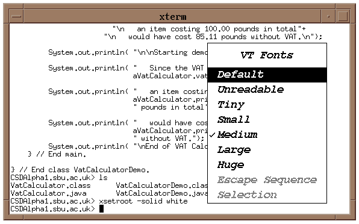
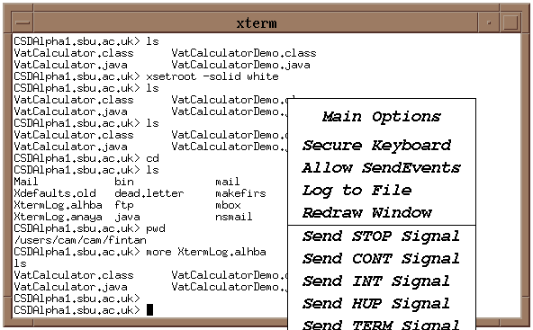
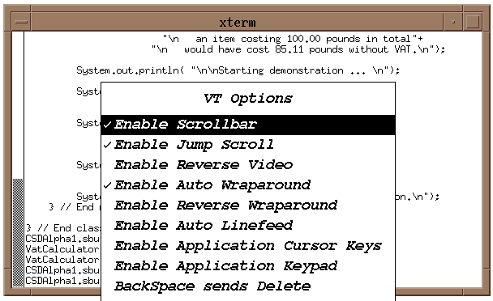

Making the most of Xterm
The terminal window is an instance of a program called Xterm.
It has many other capabilities than simply being used to give
commands to Unix. Some of these capabilities can be accessed by
posting its menus.
This menu is posted by holding down the <CONTROL> key
and pressing the right mouse button.

It allows the size of the font used in the window to be
changed. You should always adjust the size
of the font to one which is comfortable for you to read - too
small a font can cause eye strain.
The last command given to Unix from the xterm is >xsetroot -solid white, which has
changed the color of the root window from grey to white.
This menu is posted by holding down the <CONTROL> key
and pressing the left mouse button.

The most useful option here is Log to File
which will capture the terminal output in a file. To start
logging post the menu and select the Log to File
option. To stop logging post the menu again (the Log to File
option will have a tick alongside it to indicate that it is
logging) and select the Log to File option
again. The output will be stored in a file in your root directory
called XTermLog.*. This is a more convenient way of
obtaining a session log than using the script command.
This menu is posted by holding down the <CONTROL> key
and pressing the middle mouse button. If there is no middle mouse
button, or if it does not have any effect then press the left and
right button at the same time.

The most useful option is Enable Scrollbar which
will supply a scroll bar on the left of the window. This can be
used to scroll back through the contents of the xterm window.
A second xterm window can be opened by giving the command >xterm & in the first
command window. This can be useful if you have to work in two
subdirectories at the same time.
Command line completion can save a lot of time, for example
if a sub-directory contains the following files.
CSDAlpha1.sbu.ac.uk> ls
VatCalculator.java VatInterest.java Vehicle.java
VatCalculatorDemo.java VatInterestDemo.java VehicleDemo.java
A command to compile VatCalculatorDemo.java
can be given as follows.
CSDAlpha1.sbu.ac.uk>javac Va<ESCAPE>
This is asking Unix to try to work out which
file starts with Va, as there are four possibilities it
will fill in the line as far as possible.
CSDAlpha1.sbu.ac.uk>javac Vat
CSDAlpha1.sbu.ac.uk>javac VatC<ESCAPE>
Pressing a C and <ESCAPE> again
indicates that the file intended starts VatC and asks
Unix to try to complete the file.
CSDAlpha1.sbu.ac.uk>javac VatCalculator
CSDAlpha1.sbu.ac.uk>javac VatCalculatorD<ESCAPE>
CSDAlpha1.sbu.ac.uk>javac VatCalculatorDdemo.java
Unix completes the filename as far as it can,
and pressing D and <ESCAPE>, indicates that the
VatCalculatorDemo.java file is the one intended.
Highlighting and pasting can be accomplished
using the mouse.
To highlight in xterm or axe
drag across the text with the left mouse button held down. To
paste the highlighted text press the middle mouse button (or both
mouse buttons if there is no middle button or if the middle
button does not work). The highlighted text will be pasted into
the command line in xterm or at the insertion point in axe.
 Return to SSD
noticeboard
Return to SSD
noticeboard